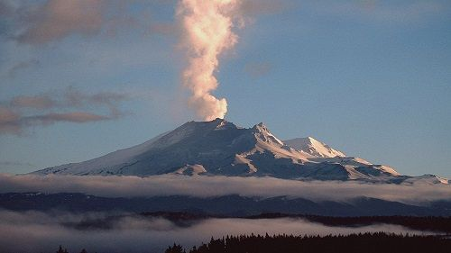
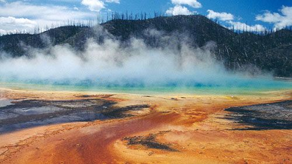
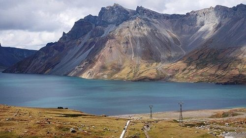
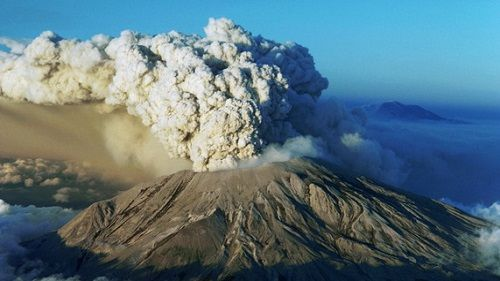

На нашем сайте подобраны наиболее интересные и опасные вулканы со всего мира.
Вулканы разделены по континентам и странам. Подобрать вулкан для рабочего стола можно в разделе
Фотографии. В разделе Новости самые последние
события из мира вулканов.
В Новой Зеландии проснулся вулкан Руапеху, изображающий Роковую гору в фильме «Властелин колец»

Вулкан Руапеху, изображавший всем известную Роковую гору «Ородруин» из фильма «Властелин колец», находится на
стадии извержения, сообщают Аргументы и Факты.
Об активизации вулкана было получено предупреждение от сотрудников Королевского научно-исследовательского
института. По отметкам ученых, в последнее время на Руапеху наблюдается большое выделение вулканических газов.
Также поднялась температура в кратерном озере, только за месяц она изменилась на 21 градус, достигнув 46
градусов.
Вулкан Руапеху является самой высокой точкой Северного острова в Новой Зеландии, высота вулкана достигает
2797 м. Это действующий вулкан. Его последнее извержение происходило в сентябре 2007 года.
В США запрещен доступ к сведениям об активности супервулкана Йеллоустон

Всевозможные слухи вновь появились вокруг вулкана Йеллоустон, сообщает ИА Внешнеэкономические связи.
Этот вулкан итак постоянно находится под пристальным вниманием многих и вызывает огромных интерес к его
сейсмологической активности в настоящее время, а тут было объявлено о закрытии доступа к сайту, который
показывал его активность в онлайн-режиме. Этим были обеспокоены пользователи всего мира, которые следили за
деятельностью вулкана и регулярно просматривали онлайн камеры.
Стало известно, что с 5 апреля введен запрет на трансляцию и никакой информации о сейсмологической активности
вулкана не существует. Как отмечают на сейсмостанции, это связано с переходом на новую версию сайта. Но это
не повлияло на распространяющиеся слухи о якобы возросшей активности вулкана и сокрытию этих фактов от
общественности. Так известно, что за последние 2 месяца в Йеллоустноской кальдере ежедневно происходили
землетрясения, правда, с небольшой мощностью в 2-2,5 балла. Но отмечено, что по отношению с прежним временем
эти показатели считаются более высокими.
Ученые подтвердили нахождение под корейским вулканом Пэктусан большой магматической области

Командой международных ученых из Северной Кореи, США и Великобритании в опубликованном журнале Science было
дано подтверждение о нахождении под вулканом Пэктусан обширной и достаточно сложной области залегания магмы.
Эти данные были получены с помощью сейсмометров, записывающих на протяжении двух лет волны удаленных
землетрясений, которые проходили через земную кору под вулканом.
Исследования ученых показали, что магматическая область под вулканом – это своеобразная система, где есть
мелкие и глубокие резервуары и находится она на глубине 35 км. Пока не ясно, как происходило в прошлом
формирование большой кальдеры и генерация мощных извержений, так как вулкан находится в нескольких сотен
километров от Тихоокеанского огненного кольца.
На основании выводов, сделанных в ходе исследования, ученые предполагают, что у этого вулкана мощная сила.
Отметим, что его извержение в 940-х годах было одним из крупнейших в современной истории. Было выброшено
100 куб. км извергнутой породы, а выброшенная им энергия приравнивалась к энергии 1 миллиона атомных бомб.
Сейчас вулкан спокоен. Но как отмечает профессор Х. Танигучи из университета Тохаку, существует высокая
вероятность его взрывного извержения до 2032 года.
В Японии произошло извержение вулкана Асо

В японской префектуре Кумамото начал извергаться вулкан Асо, выбросив столб пепла на высоту 100 м, сообщают
РИА Новости со ссылкой на главное метеорологическое управление страны
В префектуре за последние двое суток произошли два сильных землетрясения, поэтому метеорологи выясняют связь
между этими стихийными бедствиями.
Из пяти возможных извержению присвоен второй уровень опасности, также запрещено приближаться к вулкану в
радиусе 1 км в связи с опасностью выбросов вулканических камней.
Вулкан Асо периодически извергается. В сентябре 2015 года в одном из его кратеров произошло извержение,
столб пепла взметнулся на высоту 2 км, был введен третий уровень опасности. Это извержением назвали самым
мощным после извержения 1979 года. Тогда катастрофа унесла жизни 3 человек. Лишь в ноябре уровень опасности
снизили до второго.